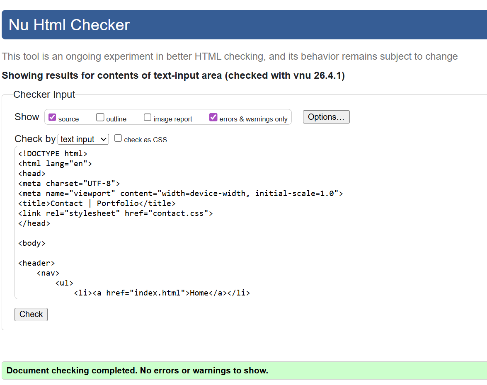
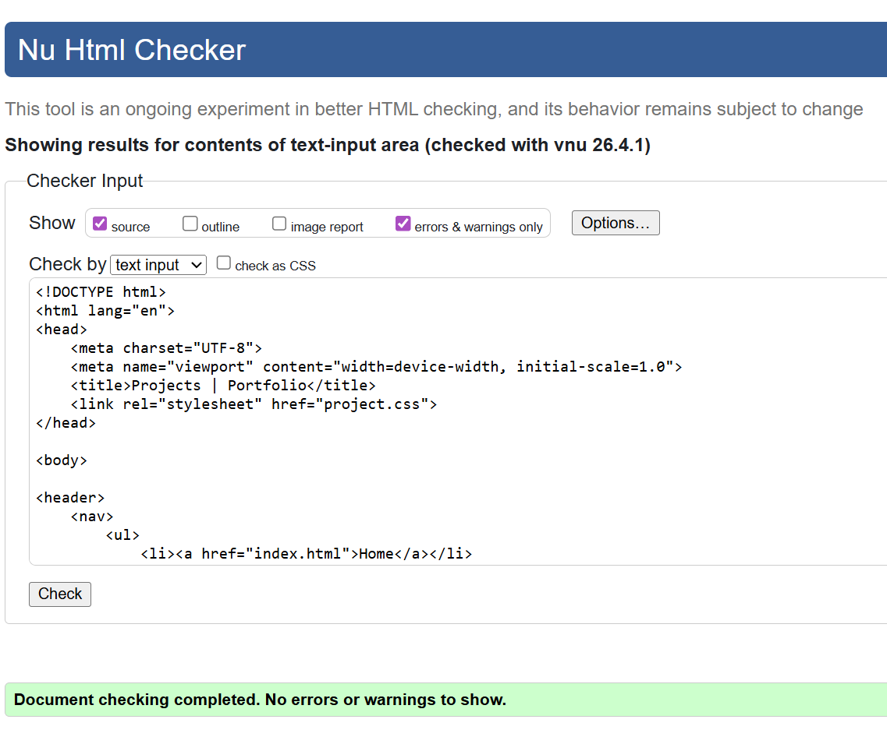
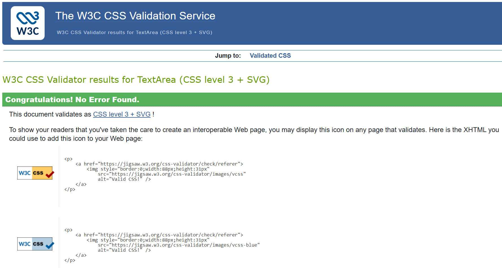

Site Report – Portfolio Website Development
Introduction
This site report documents my experience of learning the fundamentals of web development during this module. Over the term, I developed a personal portfolio website using HTML and CSS. The process involved understanding structure, styling, layout, responsiveness, debugging errors, and improving the user interface. This report reflects both my technical learning and design journey.
Learning Experience: Ups and Downs
At the beginning of the module, HTML and CSS felt confusing, especially understanding tags, nesting elements, and linking files correctly. I struggled with small errors such as missing closing tags, incorrect file paths, and broken layouts.
As I progressed, I became more confident in structuring pages, using semantic elements, and applying CSS for layout and styling. Responsive design using media queries was challenging but improved my problem-solving skills and patience.
Development of the Website
The website was developed step by step. I started with a basic structure and later added multiple pages such as Home, Projects, Contact, Site Report, and Video Demo. I improved navigation, layout, spacing, and readability throughout the development process.
Design Decisions and UI Considerations
I used a clean and simple design to ensure readability and easy navigation. Neutral colours and clear fonts were selected for better accessibility. I also took inspiration from modern portfolio websites such as Behance and Dribbble.
Validation Reports
The following screenshots show successful validation of my HTML and CSS files using W3C tools.








Video Demonstration
A video demonstration explaining my portfolio website can be accessed below:
YouTube Link: Watch Video Demo